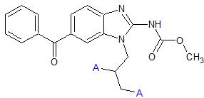
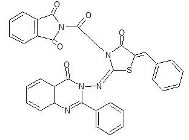
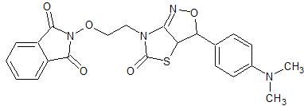
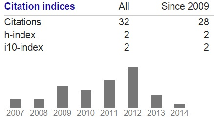

Usha Ameta

Education:
- Ph.D. in Chemistry (Specialization: Organic Synthetic Chemistry) , Mohanlal Sukhadia University, Udaipur, India, December 2007
- M.Sc. in Chemistry, Mohanlal Sukhadia University, Udaipur, India, May 2004
- B.Sc. in Chemistry, Meera Girls College, Udaipur, India, May 2002
Work Experience:
- Faculty (Laboratory Instructor - Chem 101), WSU, Pullman, WA, USA, Aug 2012 - May 2013
- Researcher, UI, Moscow, ID, USA, March 2009 - April 2009
- Lecturer, MLSU, Udaipur, India, July 2005-May 2006
Research Interests:
- Organic Synthetic Chemistry
- Synthesis of novel compounds
- Bio-medicinal properties
- Education
Synthesized compounds:

Mebendazole derivatives

One of the derivative of 3-[(5-arylidene-4-oxo-1, 3-thiazolidin-2-yliden) amino]-2-phenylquinazolin-4 (3H)-ones
Smiles Notation: O=C2c1ccccc1C(=O)N2C(=O)CN7C(=O)C(=C/c3ccccc3)/S\C7=N\N4C(=O)C6C=CC=CC6N=C4c5ccccc5

One of the derivaties of Thiazolidinone
Smiles Notation: CN(C)c1ccc(cc1)C5ON=C4N(CCON3C(=O)c2ccccc2C3=O)C(=O)SC45
Publications:
Click here for current Google Scholar Citations
Snapshot of citations from Jan 2014

Ameta, Usha; Ojha, Swati; Bhambi, Dinesh; Talesara, Ganpat L;Synthetic studies on some 3-[(5-arylidene-4-oxo-1, 3-thiazolidin-2-yliden) amino]-2-phenylquinazolin-4 (3H)-ones and their ethoxyphthalimide derivatives",Arkivoc, Vol 13, pp 83-89, 2006
Ojha, Swati; Ameta, Usha; Dhakar, Neelam; Talesara, GL;"Synthesis and characterization of some alkoxyphthalimide derivatives of benzotriazolylthiadiazoles and benzotriazolylthiazolidinones",INDIAN JOURNAL OF CHEMISTRY SECTION B, Vol 46(5), pp 860-865,2007
Rathore, Kavita; Ameta, Usha; Ojha, Swati; Sharma, Ranjana; Talesara, GL;"Synthesis and Antibiotic Activity of Mebendazole Derivatives of Pharmacological Interest", Journal of Chemistry,Vol 4(2), pp 166-172, 2007
PosterPresented a poster in University Grant Commission sponsored National Symposium on Recent Trends in Chemistry (NRTC) on 10th January 2007 at Department of Chemistry, M.P. Govt. P.G. College, Chittorgarh (Rajasthan), India.
Courses Taught:
- Washington State University
- Chemistry 101 - Laboratory, Fall 2012 and Spring 2013.
- Mohanlal Sukhadia University
- M.Sc. Advanced Chemistry Courses, 2005-2006 session